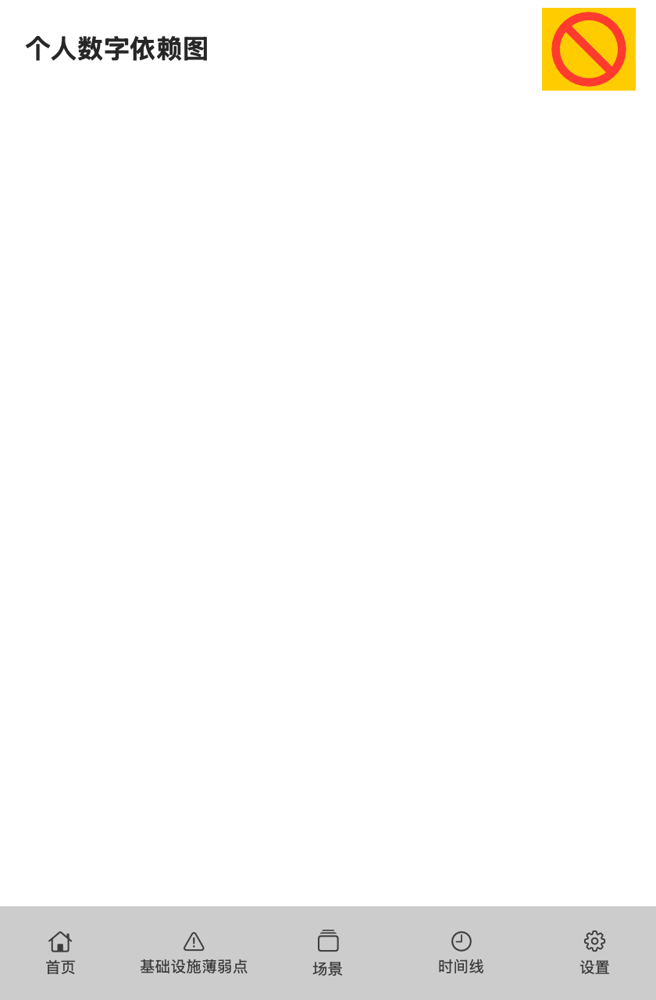
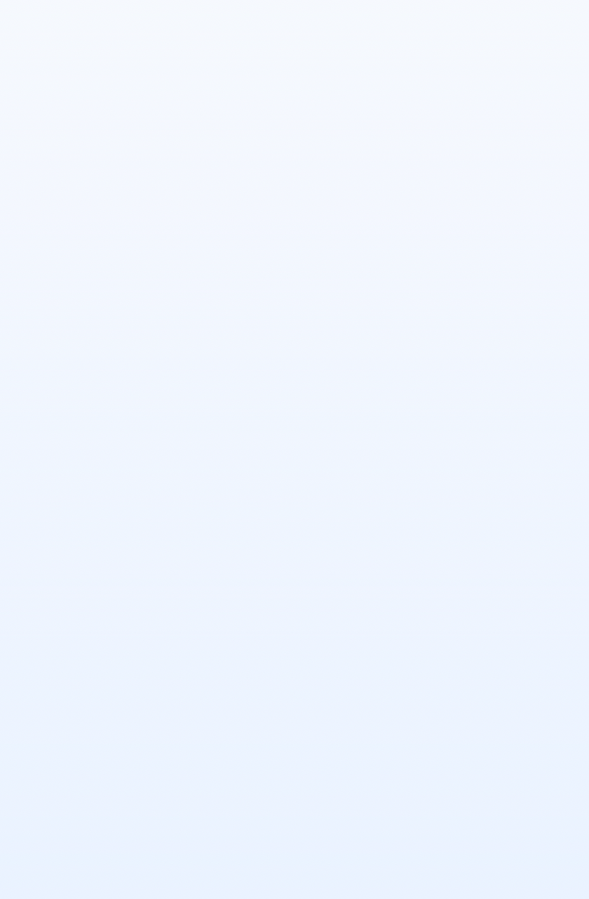

PDIG · iOS 运行时渲染人眼验收证据
30 屏 × light/dark = 60 张 · macOS SwiftUI 真实渲染（30 个屏幕）
这条页面只摆证据，不下结论。
这些是 macOS 上的 SwiftUI 真实渲染（不是模拟器截图、不是真机），用于看版式/文案/层级是否可接受； 行为证据另有 XCUITest：
IOS_HUMAN_VISUAL_ACCEPTANCE 仍是 NOT_RUN，只有 owner 能判定。这些是 macOS 上的 SwiftUI 真实渲染（不是模拟器截图、不是真机），用于看版式/文案/层级是否可接受； 行为证据另有 XCUITest：
result=Passed passed=8 failed=0（run 43572807640，iPhone + iPad）。
两者不能互相替代：渲染通过 ≠ 交互通过，反之亦然。 首页浅色
首页浅色
首页深色 发现浅色发现深色
发现浅色发现深色 基础设施浅色基础设施深色
基础设施浅色基础设施深色 场景浅色场景深色
场景浅色场景深色 变更计划浅色变更计划深色
变更计划浅色变更计划深色 验证浅色验证深色
验证浅色验证深色 备份浅色备份深色
备份浅色备份深色 导入浅色导入深色
导入浅色导入深色 时间线浅色时间线深色
时间线浅色时间线深色 现在浅色
现在浅色 现在深色
现在深色 总览浅色
总览浅色 总览深色
总览深色 更换手机号浅色
更换手机号浅色 更换手机号深色
更换手机号深色 个性化浅色
个性化浅色 个性化深色
个性化深色 银行卡列表浅色
银行卡列表浅色 银行卡列表深色
银行卡列表深色 银行卡详情浅色
银行卡详情浅色 银行卡详情深色
银行卡详情深色 号码列表浅色
号码列表浅色 号码列表深色
号码列表深色 号码详情浅色
号码详情浅色 号码详情深色
号码详情深色 银行卡自定义浅色
银行卡自定义浅色 银行卡自定义深色
银行卡自定义深色 号码自定义浅色
号码自定义浅色 号码自定义深色
号码自定义深色 账号列表浅色
账号列表浅色
账号列表深色 账号详情浅色
账号详情浅色 账号详情深色
账号详情深色 邮箱列表浅色
邮箱列表浅色 邮箱列表深色
邮箱列表深色 邮箱详情浅色
邮箱详情浅色 邮箱详情深色
邮箱详情深色 设备列表浅色
设备列表浅色 设备列表深色
设备列表深色 设备详情浅色
设备详情浅色 设备详情深色
设备详情深色 服务列表浅色
服务列表浅色 服务列表深色
服务列表深色 服务详情浅色
服务详情浅色 服务详情深色
服务详情深色 薄弱点浅色
薄弱点浅色 薄弱点深色
薄弱点深色 记录浅色
记录浅色 记录深色
记录深色 我浅色
我浅色 我深色
我深色